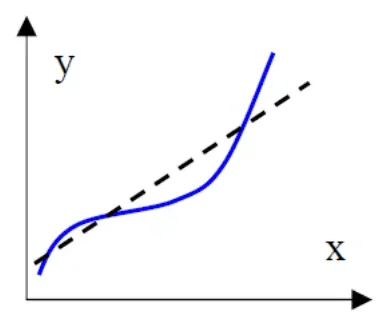
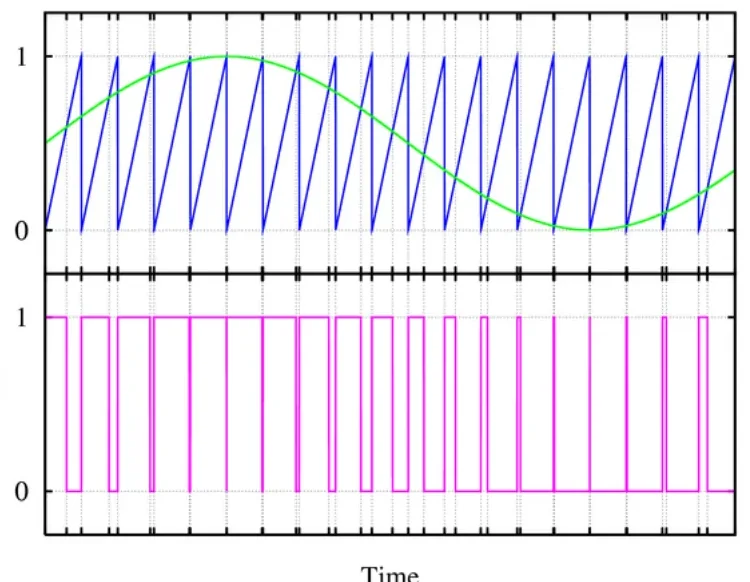
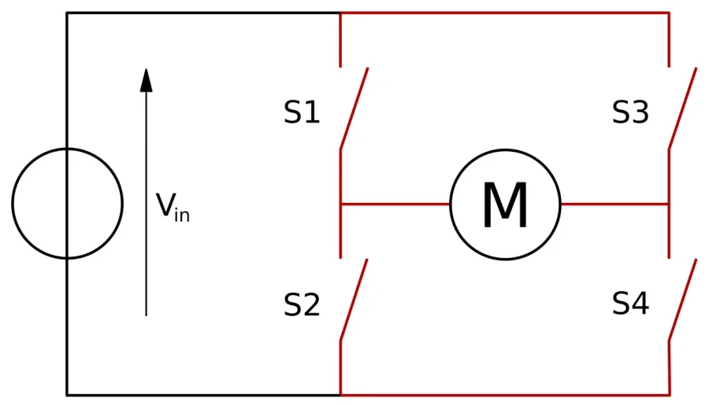

Sensors & Actuators¶
Every electronic control unit (ECU) in a vehicle does the same three things: it senses a physical quantity, processes the measurement, and acts on the system to change its behavior. This article covers the two ends of that chain — the sensors that feed information in and the actuators that turn the ECU's decisions back into physical action — plus the vocabulary you need to read an automotive wiring schematic and classify what you find on it.
Sensors¶
Sensor, transducer, transmitter¶
These three terms are often mixed up; in measurement engineering they mean distinct things:
- Sensor — the primary element of a measurement chain: it converts the input variable (the measurand) into a signal suitable for measurement.
- Transducer — a device that accepts information as a physical or chemical input variable and converts it into an output variable of the same or a different nature (for example pressure → voltage).
- Transmitter — a device that receives the measurement variable and produces a normalized output signal (a standard range such as 0–5 V or 4–20 mA) that downstream electronics can consume directly.
A transducer is the sensitive device that delivers a measurable electrical signal in response to a specific measurand — so a transducer is always a sensor, but a sensor is not necessarily a transducer (a sensor may need a separate transduction stage before anything electrical appears).
flowchart LR
M["Physical quantity<br/>(measurand)"] --> S["Sensor /<br/>Transducer"]
S --> C["Signal<br/>conditioning"]
C --> E["ECU input stage<br/>(A/D conversion)"]
E --> P["Control software"]
P --> D["Output driver"]
D --> A["Actuator"]
A -.->|"acts on the process"| MHow sensors are classified¶
Sensors are grouped along several independent axes:
| Axis | Options |
|---|---|
| Energy behavior | Active or passive (see below) |
| Measured quantity | temperature, pressure, speed, position, humidity, illuminance, … |
| Nature of the output | resistive, inductive, capacitive, voltage, current, … |
| Output form | analog or digital |
Active vs. passive is the classification you will use most:
- An active sensor is based on a physical effect that converts the measurand's own energy (thermal, mechanical, irradiation, …) directly into electrical energy. Examples: thermocouples (thermoelectric effect) and pyroelectric crystals whose polarization depends on temperature.
- A passive sensor only changes the impedance of its sensitive element in response to the measurand — it cannot generate energy by itself. Examples: strain gauges and magnetic sensors.
This distinction has a direct practical consequence: a passive sensor needs an external excitation (a supply voltage or current) before it produces anything readable, while an active one generates its signal on its own.
Conditioning circuits¶
The electrical signal leaving a sensor is rarely ready for an ECU pin, so a conditioning circuit sits between the two. Its role differs per sensor type:
- For a passive sensor/transducer, the conditioning circuit is essential for generating the electrical signal at all — it supplies the excitation and turns the impedance change into a voltage (for example a Wheatstone bridge for a strain gauge). The sensor and its conditioning form a single functional assembly.
- For an active sensor/transducer, the conditioning circuit only adapts the generated electricity — amplification, filtering, level shifting — to the input characteristics of the measurement system. This is classic signal conditioning.
Static characteristics¶
Static characteristics describe how a sensor behaves when the measurand changes slowly enough that dynamics do not matter.
Input side:
- Measurand — the quantity to be measured.
- Measurement principle — the physical principle the output generation is based on.
- Range — the upper and lower limits within which the measurand may vary.
- Significant properties — type of sensitive element, construction, and internal circuitry.
Output side:
- Species — the nature of the output quantity (voltage, current, resistance, …).
- Normal operating range (output range) — the span of output values produced while the input sweeps the full input range.
- Deliverable power — the maximum power the sensor can supply to the downstream system; for current outputs the load impedance is specified instead.
- Output impedance — matters for matching to the ECU input stage.
- Output uncertainty — the width of the band that contains, with a stated confidence level, all the values the output may take for a given operating condition.
Calibration and conversion:
- Conversion function — the function that maps the input value to the output value (what a DBC-style scaling factor + offset encodes for a bus signal).
- Calibration constant — the slope of the calibration curve, when the curve is linear.
- Calibration uncertainty — the width of the band of possible calibration values.
- Sensitivity — the slope of the conversion curve at a given operating point; for a linear sensor it is the inverse of the slope of the calibration curve.
- Stability — the ability to keep operating characteristics unchanged over time, both short and long term (drift).
Linearity tells you how far the calibration curve deviates from a straight line — it is quoted as the maximum deviation from the ideal line:

Three more terms that appear constantly in datasheets and test reports:
- Resolution — the smallest variation of the measurand that produces an appreciable variation of the output. When the sensor works close to zero, this is called the threshold.
- Repeatability — how tightly the output values cluster when the same measurand is applied repeatedly under the same operating conditions; expressed like the calibration uncertainty.
- Hysteresis — the maximum difference between the outputs measured at the same measurand value when the value is approached first with increasing and then with decreasing measurand, sweeping the whole range.
Accuracy terms in the wild
When you read "±1 % FS" on a datasheet, that figure usually folds linearity, hysteresis and repeatability into one number referenced to the full scale of the output range — not to the current reading.
Dynamic characteristics¶
When the measurand changes quickly, the sensor's own speed matters:
- Frequency domain — the bandwidth: the range of measurand frequencies the sensor can follow.
- Time domain — rise time and fall time of the output signal, the time constant, and the settling time (how long the output needs to enter and stay within its final error band after a step input).
A knock sensor needs bandwidth in the kilohertz range; a coolant temperature sensor can be a hundred times slower without anyone noticing.
Common physical effects and sensor examples¶
The table below collects the classic transduction effects — it is a practical lookup when you need to guess how an unknown sensor on a schematic works.
| Physical effect | What happens | Typical devices | Measures | Output |
|---|---|---|---|---|
| Magnetoresistive | Resistance depends on strain / field | Magnetoresistor | Magnetic field, linear & angular displacement, proximity, position | Change in resistance |
| Piezoelectric | Stress on the element generates electric charge | Force sensors, piezo microphone, piezo temperature sensor | Vibration, force, ultrasonic waves, temperature | Voltage or charge |
| Pyroelectric | Element generates charge in response to heat flow | Heat flowmeter, pyroelectric sensor | Temperature change | Voltage |
| Thermoelectric | Temperature difference between two junctions of different metals generates a potential | Thermocouples, thermopiles, infrared pyrometer | Temperature difference | Voltage |
| Ionization | The measurand ionizes the sensing element | Electrolytic sensor, vacuum gauges, chemical ionizer | Conductivity, pH, pressure, atomic radiation | Current |
| Photoresistive | Optical radiation changes the element's resistance | Photoresistor, photodiode, phototransistor, photofet | Light, position, motion, sound flow, force | Change in resistance |
| Photovoltaic | Radiation makes the element generate a potential | Flame photometer, light detector, pyrometer | Light intensity, position, motion, temperature | Voltage |
| Acousto-optic | An optical wave interacting with an acoustic wave produces a new optical wave | Acousto-optic deflector, Bragg cell | Physical vibration | Phase-modulated voltage |
| Doppler | Wave frequency shifts with relative motion between source and observer | Doppler radar, laser Doppler velocimeter | Relative velocity | Frequency |
| Thermal radiation | Objects emit radiation whose intensity depends on temperature | Pyrometer | Temperature | Voltage |
Actuators¶
An actuator is the mirror image of a sensor: in an automation system it transforms an automatic command decision, processed by an electronic control board, into a physical action on the process being regulated. It lets you act on a system to modify its behavior and obtain the desired output.
More generally, an actuator is a transducer that converts a signal from one physical domain — typically electrical — into an equivalent quantity in another domain: mechanical, hydraulic, thermal, and so on.
Actuators are classified two ways:
- By the physical quantity the command is transduced into — the most common families are mechanical, hydraulic ("plumbers" in the deck's translation), and electrical.
- By the type of electric actuation command — digital (on/off) or analog (in practice almost always PWM).
The relay — the basic digital actuator¶
The relay is one of the simplest and most used actuators in the automotive field: an electromechanical switch that separates the control of a load from the power the load needs. A relay therefore consists of two distinct circuits:
- Control circuit — a coil; when current flows through it, the coil is excited and pulls the contacts over.
- Power circuit — the contacts and the user (load). Contacts can be normally open (NO) or normally closed (NC).
The ECU only drives the small coil current; the contacts switch the heavy load current (a fuel pump, a starter solenoid, a fan).
HSD vs. LSD — which side of the coil the ECU switches:
- An HSD (High-Side Driver) relay is commanded active with a high potential: the control unit drives battery voltage onto one coil pin, so the other pin sits at a low reference potential.
- An LSD (Low-Side Driver) relay is commanded active with a low potential: the control unit grounds one coil pin, so the other pin sits at a high reference potential.
Reading schematics
Pin labels like CANISTER PURGE PWM (HSD) or
HIGH PRESS GDI FUEL PMP LSD on a wiring diagram tell you immediately
which side the ECU driver switches — essential when you probe the circuit
with a multimeter or scope.
PWM — the analog-style command¶
To get an analog effect from a digital output, ECUs use PWM (Pulse Width Modulation): the pin switches fully on and fully off at a fixed frequency, and the duty cycle (the fraction of the period spent "on") encodes the commanded value. An inductive or thermal load — a valve, a heater, a lamp — averages the pulses, so 50 % duty behaves like half power.

The figure shows the classic generation scheme: a slow reference signal (green) is compared against a fast sawtooth carrier (blue); while the reference is above the carrier, the output (magenta) is high. The higher the reference, the wider the pulses.
The H-bridge — driving a motor both ways¶
A DC motor needs its terminal polarity reversed to change direction. The H-bridge does this with four switches arranged like the letter H around the motor:

| S1 | S2 | S3 | S4 | Motor |
|---|---|---|---|---|
| closed | open | open | closed | runs one direction |
| open | closed | closed | open | runs the opposite direction |
| open | open | open | open | free / coast |
Never close both switches on one leg
Closing S1+S2 (or S3+S4) at the same time shorts the supply through the bridge — a shoot-through fault that destroys the driver stage. Real H-bridge drivers enforce a dead time between switching.
Combining the two ideas — an H-bridge whose switches are PWM-driven — gives you full control of both direction and speed, which is exactly how electronic throttle bodies and many pump/flap motors are driven.
Use case: ignition coil¶
A spark plug needs an "ignition spark" — an arc — which means a very high voltage that the 12 V vehicle network cannot provide directly. The ignition coil solves this as a transformer:
- The ECU drives current through the primary winding from the vehicle supply, building up energy in the magnetic core.
- The primary current is interrupted sharply — this is why the primary must be driven with an alternating/switched waveform, not a steady DC.
- The collapsing field induces the high-voltage pulse in the secondary winding, which fires the plug.
On a modern engine each cylinder has its own coil (you will see Ignition coil cylinder 1…4 on the schematic), driven directly by ECU power stages.
Use case: fuel injector¶
A fuel injector is a solenoid valve: the ECU energizes a coil, a needle lifts, and pressurized fuel sprays for exactly the commanded time. Two families matter:
- Port injection (no GDI) — fuel pressure is a few bar; the injector is a simple low-voltage solenoid, driven on/off.
- GDI (Gasoline Direct Injection) — fuel pressure is tens to hundreds of
bar, so opening the needle takes much more energy. The driver uses a
peak-and-hold current profile and, as the schematics show, both an HSD
and an LSD line (
HIGH PRESS GDI FUEL PMP HSD/LSD) so the ECU can control both sides of the circuit and shape the current precisely.
Hands-on: classify the sensors and actuators on a real engine schematic¶
The lesson exercise gives you two real wiring schematics from the 520 eAWD with the 1.3 GSE T4 engine (ECU: Continental GPEC4 LM):
520_eAWD_EMEA_sch_eng_1.3_GSE_T4_20180611.pdf— the engine-side schematic (engine harness, ECU engine connector, sensors and actuators on the engine).520_eAWD_EMEA_sch_veh_1.3_GSE_T4_20180611.pdf— the vehicle-side schematic (fuse/relay box, body wiring, pedal and tank sensors).
Goal: find every sensor and actuator on the two sheets, then for each one state (1) whether it is a sensor or an actuator, (2) whether it is active or passive, (3) whether its interface is analog or digital.
Setup: open both PDFs side by side and keep the classification axes from
this article at hand. Trace each component back to the ECU pin names — the
wire labels (TIP sensor signal, Linear lambda sensor … HS HTR command,
CANISTER PURGE PWM (HSD)) tell you both the function and the drive type.
Step-by-step:
- Scan the engine sheet first and list every labeled component around the engine harness connectors.
- Split the list into sensors (measure something: temperature, pressure, position, speed, knock, oxygen) and actuators (do something: coils, injectors, valves, motors, relays).
- Classify each sensor active or passive from its physical principle — e.g. a thermocouple/piezo element generates its own signal (active), an NTC/strain element needs excitation (passive).
- Classify each interface analog or digital — continuous voltage signals (pressure, temperature, pedal position) are analog; switches and PWM/HSD/ LSD-driven loads are digital commands.
- Repeat on the vehicle sheet for body-side components.
Expected result (orientation): the engine sheet alone contains, among others —
- Sensors: knock sensors 1–2, engine speed (crankshaft) sensor, engine phase (camshaft) sensor, GDI fuel rail pressure sensor, coolant temperature sensor, oil gallery sensor, intake P&T / TMAP sensor, inlet throttle (TIP) pressure and temperature sensors, linear lambda sensor in front of the catalyst, VVA oil temperature sensor, throttle position sensors TPS1/TPS2.
- Actuators: ignition coils for cylinders 1–4, GDI injectors for cylinders 1–4, VVA actuators 1–4, variable-displacement oil pump electrovalve (VDOP), dump valve, waste-gate valve, rail pressure regulator/control valve, electric thermostat actuator, throttle actuator, canister purge valve (PWM, HSD), high-pressure GDI fuel pump (HSD + LSD), starter, WCAC pump.
The vehicle sheet adds the accelerator pedal position sensor, stop-lamp switch, fuel level and fuel tank pressure sensors, GPF temperature and differential pressure sensors, plus the fuel pump relay, cranking-disable relay, engine control module relay and fuel-lid latch.
Common mistakes:
- Calling a knock sensor passive — it is piezoelectric, so it generates
charge (active). Temperature NTCs and pressure cells that need a
sensor supplypin are the passive ones. - Confusing the signal type with the drive type: an injector is a digital on/off actuator even though its current waveform is carefully shaped.
- Missing the lambda sensor's heater command line (
HS HTR command) — the sensor element is analog, but its heater is a separately driven actuator circuit. - Treating relays as part of the ECU — they sit in the fuse/relay box (FRB/RB designators on the vehicle sheet) and are driven by the ECU.
Key takeaways
- Sensor → transducer → transmitter is a chain of increasing refinement: sense the quantity, convert it to an electrical signal, normalize it.
- Active sensors generate their own energy (thermocouple, piezo); passive ones only change impedance and need an excitation circuit.
- Know the static vocabulary: range, sensitivity, calibration, linearity, resolution/threshold, repeatability, hysteresis — and the dynamic one: bandwidth, rise/fall time, settling time.
- Actuators close the loop: relays for on/off loads (HSD switches the high side, LSD the low side), PWM for proportional control, H-bridges for bidirectional motors.
- Ignition coils and GDI injectors show why actuators need dedicated power stages: transformers for kilovolts, peak-and-hold dual-side drivers for high-pressure fuel.
- On a wiring schematic, component names plus ECU pin labels are enough to classify every element as sensor/actuator, active/passive, analog/digital.
Where this leads
The signals these sensors produce travel to other ECUs over the vehicle buses — see CAN, LIN & Automotive Ethernet — and you will measure and stimulate real sensor/actuator circuits later in the HIL lessons.
Source material¶
This article was distilled from the academy lesson materials:
- :material-file-pdf-box: eAWD EMEA sch eng 1.3 GSE T4 20180611 — PDF, 292.7 KB
- :material-file-pdf-box: eAWD EMEA sch veh 1.3 GSE T4 20180611 — PDF, 309.9 KB
- :material-file-pdf-box: Sensors — PDF, 792.8 KB
- :material-file-pdf-box: Sensors Question — PDF, 111.8 KB